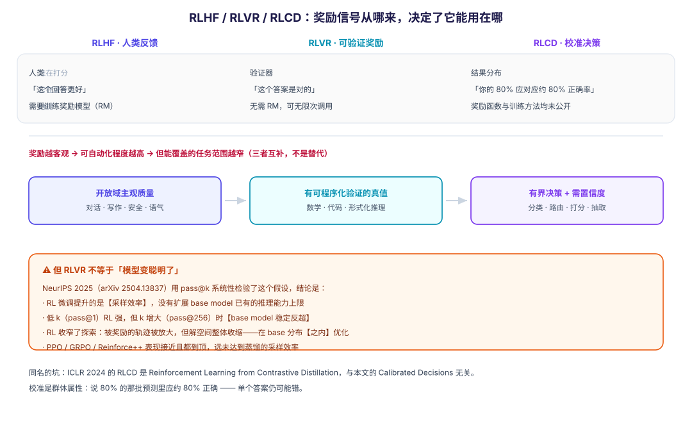

2026-09-22 · Damon + Nemesis · 分类：LLM 训练 / 对齐 · 标签：RLHF, RLVR, RLCD, GRPO, DeepSeek-R1, 校准, 奖励模型
一、先说一个必须澄清的坑：RLCD 不止一个
在搜"RLCD"时，你会同时撞到三个东西：
| 缩写全称 | 领域 | 是什么 |
|---|---|---|
| Reinforcement Learning from Contrastive Distillation | LLM 对齐 | ICLR 2024 的方法，用"正/负提示"造出对比偏好对，从而在不用人类反馈的情况下对齐模型（优于 RLAIF 与 context distillation） |
| Reinforcement Learning for Calibrated Decisions | LLM 后训练 | TypeSafe AI 2026 提出的范式，本文讨论的就是它 |
| Reflective LCD | 硬件 | 反射式液晶显示器，与 AI 无关 |
这两个 AI 意义上的 RLCD 名字撞车纯属巧合，方法上毫无关系。写论文或做技术选型时如果不注明全称，读者会误解——本文以下所有 "RLCD" 均指 Calibrated Decisions。
二、三者的真正分野只有一件事：奖励信号从哪来
把三个名字并排看，就能看出命名逻辑——它们都在说"奖励来自谁"：
RLHF 人类说： "这个回答更好"
RLVR 验证器说："这个答案是对的"
RLCD 结果说： "你给的 80%，应该对应约 80% 的实际正确率"所以这不是三个"越来越先进的算法"，而是三种不同的奖励信号来源。理解了这一点，后面所有差异都是推论。

三、RLHF：把人类偏好炼成奖励模型
3.1 流程
经典 RLHF 是三段式：
- SFT——用
(指令, 回答)对做监督微调，让模型先会"照着说话"； - 训练奖励模型（RM）——让人类对同一提示的多个回答做排序，训一个模型把回答映射成标量分数；
- RL 优化——用 PPO 对着 RM 的分数优化策略。
用 PPO 的原因是要限制单步更新幅度：它优化一个 clipped surrogate objective，把新旧策略的差异夹在一个范围内，避免一步更新过大导致训练崩溃。
3.2 SFT 和 RLHF 到底差在哪
| 维度 | SFT | RLHF |
|---|---|---|
| 核心目标 | 模仿正确答案（指令遵循） | 对齐人类偏好（有用 / 无害 / 诚实） |
| 数据 | 高质量 (指令, 回答) 对 | 提示 + 偏好排序 |
| 学习方式 | 拟合分布（填鸭） | 试错与反馈（探索） |
| 优化信号 | token 级交叉熵 | 整段生成质量的标量奖励 |
| 泛化 | 受限于训练数据分布 | 可迁移到未见过的复杂指令 |
关键差别在最后一行：SFT 教的是"照着说"，RLHF 教的是"往人偏好的方向走"——后者才有机会超出训练数据本身。
3.3 成本与结构性瓶颈
- 规模不小：训练一个 RM 大约需要 5 万量级的偏好标签（远超学术实验室预算，但对大厂不算多）；
- 标注者偏见会写进模型：几个标注者意见不一致，这种分歧会变成训练数据里的潜在噪声；
- 可扩展性受人工上限约束——这是后来 RLAIF / RLVR 出现的直接动因。
3.4 变体与走向
- RLAIF：用更强的 AI 当评委替代人类，降本、缓解主观偏见；
- DPO：跳过 RM + PPO，直接在偏好数据上做离线优化（工程上简单得多）；
- 迭代式后训练（如 LLaMA 3）：把"采样 → 标注 → DPO/PPO"做成循环，上一轮的最优模型成为下一轮的数据生成器；
- 走向推理：以 o1、DeepSeek-R1 为代表，RL 的目的从"对齐偏好"变成"探索推理路径"——也就是下一节的 RLVR。
3.5 一个容易被忽略的结构性缺陷
偏好训练的奖励是"人是否更喜欢"。而人天然偏好自信、顺耳的回答。于是模型学到的不只是"答对"，还有"听起来对"——即使它本该不确定。
这不是猜测：已有研究发现 RLHF 的奖励模型系统性偏向高置信度的表达（Leng et al. 2024）。也就是说，过度自信是偏好训练的结构性副产物，不是训练没调好。
这一点是理解 RLCD 为什么存在的关键。它同时也是下文 RLCD 小节的开头。
四、RLVR：把"可验证"当奖励
4.1 核心思想
RLVR（Reinforcement Learning with Verifiable Rewards）直接抛弃奖励模型：
不训练 RM，不找人打分——直接跑验证器。数学题对答案，代码跑测试，形式证明过检查器。
为什么这能成立：验证器给的是干净的二元信号，因此不需要价值函数近似，训练复杂度下降、收敛更快；而且验证器可以无限次调用，训练数据不再是瓶颈。
DeepSeek-R1 就是这么做的：用规则式奖励（格式合规 + 可验证正确性）在数学、代码、逻辑上规模化 GRPO。
4.2 算法配套：GRPO
GRPO（Group Relative Policy Optimization） 是 RLVR 的基础方法，也是最常被引用的实现。它相对 PPO 的关键简化是去掉了 value network：对同一个问题采样一组回答，用组内相对表现（该回答的奖励减去组内均值/标准差）当优势估计。
于是"一道题 8 次采样里做对 5 次"这种信号，就足以告诉模型哪些推理路径值得强化。
4.3 DeepSeek-R1 给这条路线带来的说服力
在 R1 之前，业界普遍怀疑"仅靠对/错的二元奖励，真能训出强推理模型吗"。R1-Zero（纯 RL、不做 SFT 冷启动）展示了：
- 自主进化：模型自己学会延长思考、回头检查、重新推导——被描述为"顿悟时刻"；
- 以时间换智能：RL 本质鼓励生成更长的思维链来换准确率，这是推理模型与传统 LLM 最直观的差别。
R1 还诚实地报告了失败尝试：过程奖励模型（PRM）和蒙特卡洛树搜索（MCTS）都在实验中放弃了。
4.4 边界：它只在有 ground truth 的地方成立
这是 RLVR 最硬的一条限制：创意写作、品牌语调、细腻论证这类没有客观真值的任务，它做不了——主观质量上人类偏好数据仍然更优。
另外值得记住一句实话：RLVR 本身不是新技术，它就是"标准 RL + 确定性奖励函数"；新的地方在于把它在大模型后训练上规模化应用。
4.5 已知病灶（工程上必须知道）
| 问题 | 表现 |
|---|---|
| 熵坍缩（entropy collapse） | 随 GRPO 训练推进熵下降，分布内准确率上升、分布外表现恶化——模型不是在学可泛化的推理模式，而是在过拟合训练分布；熵崩得太早，策略就困在狭窄的推理模式里 |
| 长度偏置 | 不做长度归一化时，CoT 长度会无界增长（因为"答错不如写长"）；Dr. GRPO 一类工作专门修这个 |
| 梯度分配问题 | 有分析指出 GRPO 存在正样本的梯度错配（Gradient Misassignment）与负样本的梯度支配（Gradient Domination），据此提出 REAL 等改进 |
| 无价值网络更易不稳 | GRPO 这类 value-free 方法用批统计量当基线，对奖励分布的离群值更敏感（用中位数替代均值可缓解） |
4.6 最重要的质疑：它可能没在扩能力，只是在省采样
这是本节最该记住的一条。NeurIPS 2025 的工作《Does Reinforcement Learning Really Incentivize Reasoning Capacity in LLMs Beyond the Base Model?》（arXiv 2504.13837）系统性检验了这个假设，结论是：
RL 微调提升的是采样效率，并没有扩展 base model 已有的推理能力上限。
三条实证：
- 高 pass@k 时 base model 反超——RL 模型在低 k（如 pass@1）表现出色，但 k 增大（如 pass@256）时原始 base model 稳定超过它；
- RL 收窄了探索：被奖励的轨迹被放大，但解空间整体收缩——说明 RLVR 是在 base 分布之内优化，而非之外；
- 现有 RL 算法都到顶了：PPO、GRPO、Reinforce++ 表现接近，且都远未达到蒸馏等更宽策略的采样效率。
这条质疑非常关键：它意味着"RL 让模型变聪明了"这个说法，至少在该文覆盖的数学/代码/视觉基准上，应改写为"RL 让模型更稳定地发挥它已经会的东西"。
五、RLCD：把"校准"当奖励
5.1 定义
RLCD（Reinforcement Learning for Calibrated Decisions） 是 TypeSafe AI 用来训练 Jev 的后训练方法。它的奖励既不是"人更喜欢"，也不是"答案正确"，而是：
模型给出的概率，是否与这些决策的实际正确率匹配。
5.2 为什么需要它：TypeSafe 对偏好训练的两条诊断
TypeSafe 的论证是——偏好训练有两个副作用，而这两个副作用对要自动执行的软件是致命的：
- 它奖励"听起来对"：人偏好自信、顺耳的回答，所以模型学会即使在应该不确定时也表现得自信；
- 它收窄了输出分布：TypeSafe 称之为 mode dropping——生成对抗网络里 mode collapse 的温和版本，模型集中在偏好的风格上，在其他可能性上丢掉了概率质量。
对聊天机器人，这两条可以接受——反正有人在读。但对一个没人复核结果就要拿去分支的决策组件，"诚实的不确定性"比"令人舒适的答案"重要得多。
5.3 "校准"到底是什么意思（最容易误解的一条）
判据是天气预报：一个说"70% 会下雨"的预报员，在 100 个这样的日子中应该有约 70 天下雨。
要点在于：
校准是群体的性质，不是单个答案的性质。 一个校准完美的模型，单个答案依然可能是错的。
这正是它和"准确率"的本质区别——准确率回答"对不对"，校准回答"你说自己有多确定，是否可信"。
5.4 它不是全新的：校准 RL 已有前驱
这点值得明确，因为 TypeSafe 的发布容易被读成"发明了新东西"。已有的工作至少包括：
- Rewarding Doubt（arXiv 2503.02623，慕尼黑工大等）：用对数评分规则（一种严格适当评分规则）作为奖励，同时惩罚过度自信与自信不足；把置信度建模成下注博弈（越自信 → 下注越大）。论文证明该奖励下的最优策略就是完美校准。一个很重要的工程特性是：它只奖励"表达出来的置信度"，不改变答案本身——答案先独立生成，因此准确率保持稳定，推理开销也只增加少量 token。
- RLCR（Reinforcement Learning with Calibration Rewards）：在二元正确性奖励上叠加 Brier 分数，用 GRPO 为底，惩罚"错又自信"和"对却不自信"。
- 更早的 Tao et al. (2024)：改造 RLHF 使 verbalized confidence 与偏好评分对齐——但它依赖人工偏好数据，且不解决事实性校准。
所以 RLCD 的贡献更在整包（不要文本生成 + 类型化输出 + 以校准为核心的奖励 + 面向自动化的产品形态），而非单点技术。
5.5 它也是三者中最不透明的
必须写清楚：截至本文，TypeSafe 未公开 RLCD 的奖励函数、模型架构、训练过程和校准方法，没有已发表的校准曲线，也没有可独立复现的论文。它公布的是接口、定价、延迟和自评基准。
因此对 RLCD 的正确态度是：接口可用、机制待证。
六、逐维对比
| 维度 | RLHF | RLVR | RLCD（Calibrated Decisions） |
|---|---|---|---|
| 奖励来自 | 人类偏好 | 程序化验证器 | 校准质量（置信度 vs 实际正确率） |
| 谁在打分 | 训练出来的奖励模型（RM） | 确定性的验证器 | 结果分布本身 |
| 是否需要训练 RM | 需要 | 不需要 | 未公开（推测需要某种可判定"实际正确率"的机制） |
| 奖励信号形态 | 学出来的连续标量 | 0/1 或可计算分数 | 基于评分规则的连续值 |
| 可扩展性 | 受人工标注上限约束 | 近乎无限（可程序化验证） | 受"能否事后判定对错"约束 |
| 适用任务 | 开放域对话、写作、安全 | 数学、代码、形式化推理 | 有界决策：分类、路由、打分、抽取 |
| 优化目标 | 人类偏好 | 正确性 | 置信度与准确率的一致性 |
| 主要失败模式 | 谄媚、系统性过度自信、标注偏见 | 熵坍缩、长度偏置、能力上限不涨 | 未经验证（机制未公开） |
| 代表工作 | InstructGPT、Anthropic HH、DPO、RLAIF | DeepSeek-R1、GRPO、DAPO | TypeSafe Jev；前驱 Rewarding Doubt、RLCR |
| 透明度 | 高（论文与开源实现众多） | 高 | 低（机制未公开） |
七、一条主线：客观性递增，适用域递减
把三者放在同一根轴上，规律很清楚：
奖励信号的客观性： 主观偏好 ──→ 客观正确 ──→ 客观校准
RLHF RLVR RLCD
可适用的任务范围： 开放域 ──→ 有真值 ──→ 有界决策
↓ ↓ ↓
泛化更强 只在可验证处 只在小输出空间一句话概括这条演进：对齐人类 → 对齐真值 → 对齐自我认知。
但不要把它读成"越来越先进"。正确的读法是：奖励越客观，可自动化的程度越高，但能覆盖的任务范围越窄。三者是互补的，不是替代关系——DeepSeek-R1 的完整流程本身就是 SFT、RLVR、拒绝采样 SFT 混用的。
八、怎么选
任务有没有可程序化判定的 ground truth？
├── 有 ──→ RLVR（GRPO 类） —— 但先想清楚：你要的是"提高上限"还是"稳定发挥"？
│ 若是前者，RLVR 可能给不了（见 §4.6）
└── 没有
├── 是开放域主观质量（写作/语气/论证）？ ──→ RLHF / RLAIF / DPO
└── 产出要直接驱动代码分支，且需要置信度？ ──→ 校准类方法
├── 想改模型行为 ──→ RLCD 思路（或 Rewarding Doubt 那条"只训置信度"的路线）
└── 只想加个诚实的置信度 ──→ 优先考虑 Rewarding Doubt：
它不改答案、准确率稳定、实现可复现给你的具体建议：如果你想在某个系统里加"置信度可决策"，Rewarding Doubt 那条路线比 RLCD 更值得先试——它有公开论文、有严格适当评分规则的理论保证、且不动答案（风险最小）。RLCD 目前是一个可用但机制未公开的产品接口。
九、常见误读清单
| 常见说法 | 问题所在 |
|---|---|
| "RLVR 提升了模型的推理能力上限" | NeurIPS 2025 的系统性检验结论相反：它提升的是采样效率；高 pass@k 时 base model 反超 |
| "RLHF 让模型更诚实" | 它优化的是"人喜欢"，而人偏好自信顺耳 → 反而结构性激励过度自信 |
| "RLCD 是 TypeSafe 发明的" | 校准 RL 已有前驱（Rewarding Doubt 2025、RLCR）；它的贡献在整包 |
| "RLCD 就是 RLHF 加个分数" | 奖励目标根本不同：一个优化偏好，一个优化校准 |
| "RLVR 是个新技术" | 它是标准 RL + 确定性奖励；新的是在大模型后训练上规模化应用 |
| "有了 RLVR 就不需要人类数据了" | 只在有 ground truth 的任务上成立；创意/语气/论证仍需偏好数据 |
| "校准概率说明这个答案是对的" | 校准是群体属性；单个答案仍可能错 |
| "三个范式可以按先进程度排序" | 它们是互补的，适用域不同；R1 的流程本身就是混用 |
| "叫 RLCD 的都是同一件事" | ICLR 2024 有个同名不同物的（Contrastive Distillation） |
| "熵只是训练指标，不影响结果" | 熵坍缩会同时拉高分布内、拉低分布外表现 |
十、与你的研究方向的关系
你的 IntentWeight 用 LinUCB 替代 RL——本文的框架正好能解释这个选择为什么合理：
- RLVR / RLCD 的前提都是"存在一个可计算或可事后判定的奖励"。而 LinUCB 走的是另一条路：用置信区间上界（UCB）做探索，把"不确定性"显式写进选择规则，不需要训练奖励模型、也不需要基准真值；
- 换句话说，LinUCB 用统计保证换掉了 RL 的奖励工程。这在你那种"反馈稀疏、真值不可验证"的检索场景里，往往比硬套 RL 更划算；
- 一个有意思的对应关系：RLCD 想让模型"知道自己有多不确定"，LinUCB 则让策略"按自己的不确定程度行动"——两者都承认不确定性的价值，只是 RLCD 在对齐表达，LinUCB 在对齐行为。
参考来源
- Datawhale base-llm · 第 12 章 RLHF — RLHF 三阶段、PPO 的 clipped surrogate objective、SFT 与 RLHF 对照、RLAIF / 迭代式后训练、从对齐走向推理
- RLHF vs RLAIF vs RLVR（Floating Bytes） — 三者定位与成本/质量权衡
- Rewards as Labels: Revisiting RLVR from a Classification Perspective — GRPO 的梯度错配与梯度支配问题，REAL 的改进
- Limit of RLVR（NeurIPS 2025, arXiv 2504.13837） — 核心质疑：pass@k 下 base model 反超、RL 收窄探索、现有算法到顶
- Promptfoo: RLVR explained — GRPO 训练循环、熵坍缩（引 arXiv 2505.22617）、"RLVR 不是什么"
- RLCD: Reinforcement Learning for Calibrated Decisions（独立解读） — RLCD 定义、TypeSafe 对偏好训练的两条诊断（rewards sounding right / mode dropping）、未公开内容
- RLCD: Reinforcement Learning from Contrastive Distillation（ICLR 2024, arXiv 2307.12950） — 同名不同物的那个 RLCD
- Rewarding Doubt（arXiv 2503.02623） — 对数评分规则作奖励、下注博弈建模、最优策略即完美校准、只训置信度不改答案
- RLCR: Reinforcement Learning with Calibration Rewards — 正确性 + Brier 分数的组合奖励
- Forbes: New 'Reinforcement Learning For Calibrated Decisions' Makes AI Headlines But Look Past The Hype — 对 RLCD 的媒体侧审慎视角
说明：RLCD（Calibrated Decisions）的奖励函数、架构与训练方法均未公开，本文对该范式的描述只能到"接口与目标"层；涉及前驱工作（Rewarding Doubt / RLCR）的部分有一手论文支撑。RLVR 的"能力上限"争论仍在进行中，本文如实呈现了质疑方的证据。
元信息
- 生成者：Damon + Nemesis
- 日期：2026-09-22
- 来源：10 条（含 4 篇一手论文 / 1 篇 NeurIPS 2025 工作 / 1 篇 ICLR 2024 论文 / 1 篇官方博客），全部实测可访问
- 配图：
figures/rlhf-rlvr-rlcd.svg（程序化生成） - 关联：progressive-kg 的「强化学习」「策略梯度」「贝尔曼方程」「概率校准」等节点